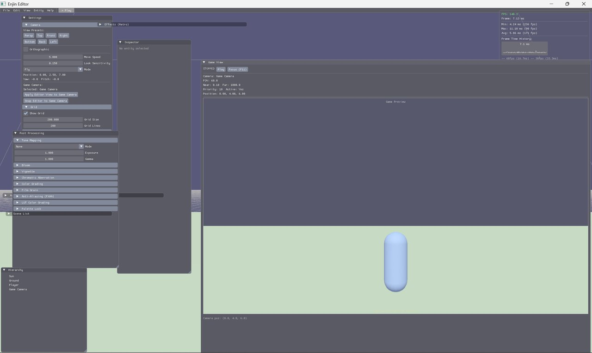
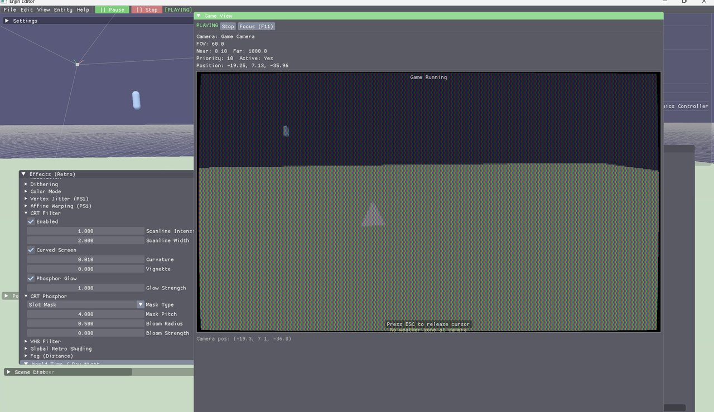

TEGE
The Enjin Game Engine
An open-source game engine built from scratch using C++20 and the Vulkan graphics API. Features a complete editor with 20+ ImGui panels, an Entity-Component-System architecture with 70+ component types, AngelScript scripting with ~721 API bindings and 146+ node visual scripting, Jolt Physics (3D) and Box2D (2D) backends, ray tracing pipeline with denoising, node graph editors for shaders, dialogue, behavior trees, quests, audio events, and particles, a built-in pixel editor and sprite pipeline, runtime UI system, asset libraries, and a standalone game player with HTML5 export and asset packing.
Features


Vulkan Renderer
PBR materials, cascaded shadow maps, soft shadows (Poisson PCF), multi-threaded command buffers, indirect rendering, Hi-Z occlusion culling, bindless resources, deferred rendering, particle system.
Ray Tracing
RT shadows, reflections, AO, GI, translucency (refraction/SSS), caustics (photon-traced), path tracing with 3 denoiser options (SVGF, OIDN, OptiX NVIDIA CUDA). SH light probes with L2 irradiance baking.
70+ Components
Full ECS with inspector UI for every component. Character controllers, physics joints, ragdoll, combat, inventory, LOD, runtime UI, streaming volumes, dialogue box.
Full Editor
20+ panels including hierarchy, inspector, asset browser, profiler, shader graph, visual script editor, animation graph, particle editor, UI editor. 44 startup templates, terrain brushes, command palette.
Post-Processing
Bloom, FXAA, film grain, tone mapping, vignette, color grading, LUT grading, chromatic aberration, depth of field with bokeh, tilt-shift, OIT transparency, stipple/dither patterns. Post-process volumes with spatial blending (Box/Sphere shapes, priority-based, smoothstep falloff).
Retro Effects
PSX flat shading, affine texturing, vertex snapping, stipple transparency, CRT scanlines with phosphor glow, dithering, VHS filter, framebuffer feedback (8 presets).
Animation
2D sprite flipbook. 3D skeletal with GPU skinning, state machines, blending. Inverse kinematics (LookAt, FABRIK). Flash-style timeline editor with layers, curve editor, onion skinning.
Audio
Cross-platform via miniaudio. 3D spatialization, multi-channel mixing, category volumes. Audio event graph editor for dynamic mixing with runtime execution.
Physics
Jolt Physics (3D) and Box2D (2D) backends. 6 joint types with breakable mode, ragdoll system. Destructible environments with 4 fracture patterns. Interactive water simulation.
Scripting
AngelScript with ~721 API bindings, TegeBehavior lifecycle, coroutines, event system, tweening (25 easing functions), noise generation, hot-reload. Flash API shim and AS2/AS3 transpiler.
Visual Scripting
Blueprint-style node graph with 146+ node types across events, flow, math, transform, physics, AI, accessibility, and more. Debugger with breakpoints, step-through, execution profiler.
Node Graph Editors
Shader graph (54 node types, GLSL codegen). Dialogue tree editor. Behavior tree editor. Quest flow editor. Audio event graph. Particle graph. Animation graph.
2D Art Pipeline
Built-in pixel editor with 8 tools, layers, 9 retro presets, onion skinning. Sprite sheet importer with auto-detect slicing. Vector drawing editor with SVG export.
AI & Pathfinding
FSM state machines, behavior trees (20 node types), patrol/chase/flee/attack behaviors, navmesh generation, A* pathfinding, spline system.
Environment
Weather (rain, snow, fog, storms with lightning). Water with Gerstner waves, shore foam, freeze, ocean mode. Procedural skybox. Vegetation with wind sway. Terrain sculpting.
Runtime UI
Anchor-based layout with 8 widget types. WYSIWYG editor with click-select, drag-move, resize handles. 6 theme presets including high contrast. Font scaling and accessible labels.
Advanced Rendering
Voxel cone tracing (VXGI), SDF rendering with sphere tracing, non-Euclidean geometry with portal rendering, metaball/blob rendering, screen-space distortion (7 types), inverse/differentiable rendering, mesh audio reactivity.
Procedural Generation
9+ algorithms including fractal terrain with erosion, L-systems, reaction-diffusion, cellular automata, physarum simulation, Fourier transform meshes, 4D stereographic projection.
Asset Libraries
Font library (42 OFL/Apache fonts across 8 categories). 3D asset library (16 CC0 model packs). 2D asset library (15 CC0 sprite/tileset/UI packs). Import presets for 10 DCC tools.
Debug & Profiler
Frame profiling with scope timers. Per-system breakdown (render, physics, scripting, ECS, audio). Draw call, entity, and memory tracking. ImGui overlay.
Plugin System
IPlugin interface with PluginContext, PluginSDK.h single-header, dynamic library loading, C++ hot-reload with state save/restore. Plugin manifest (JSON), editor management panel.
Level Streaming
Distance-based chunk loading/unloading. Streaming volumes and portals. Priority-sorted load queue with async loading. LOD system with distance-based mesh swapping. Debug overlay.
Accessibility
4 editor themes, 8 GPU colorblind modes, remappable input, reduced motion, subtitles, content warnings, screen reader support, switch access, dyslexia mode, OpenDyslexic font, motor accessibility.
Build & Distribution
Asset packer (.enjpak) with compression and CRC32. HTML5 export with Newgrounds.io API. Texture compression (BCn/ASTC). Linux AppImage. Adaptive quality. Standalone player.
LAN Multiplayer
Host-authoritative UDP networking with HMAC-SHA256 auth, 20Hz entity sync, RPC system, lobby, and reliable delivery.
Platform Support
Windows, Linux (AppImage), HTML5 export. Steam Deck auto-detection with adaptive quality and gyro input. Nintendo Switch 1 stub (requires licensed devkit). Hub application for project management.
Architecture
Project Structure
enjin/
+-- Core/ # Foundation layer (Memory, Math, Logging, Platform)
+-- Engine/ # Engine layer (Renderer, ECS, Audio, Effects, Editor, Build, Assets)
+-- Editor/ # Editor application entry point
+-- Player/ # Standalone game player entry point
+-- third_party/ # External dependencies (GLFW, ImGui, ImGuizmo)
+-- build/ # Build output (bin/, lib/)Core Layer
Foundation systems: memory management (stack, pool, linear allocators), math library (vectors, matrices, quaternions, splines), thread-safe logging, and platform abstraction.
Engine Layer
Vulkan renderer with multi-threaded command recording, async compute, and ray tracing pipeline. ECS with 70+ component types. Jolt Physics (3D) and Box2D (2D) backends. AngelScript scripting with ~721 bindings. Audio (miniaudio), asset loading (Assimp for glTF), animation (skeletal + sprite + timeline), AI and behavior trees, profiler, plugin system, level streaming, runtime UI, and scene management.
Editor Layer
Full editor application: 20+ ImGui panels including asset browser, profiler, shader graph, visual script editor, animation graph, behavior tree editor, quest flow editor, audio event graph, particle editor, UI editor, pixel editor, vector drawing editor, and sprite sheet importer. ImGuizmo gizmos, play mode, undo/redo, entity clipboard, 44 startup templates, template marketplace, terrain brushes, command palette, native file dialogs, build dialog.
Player Layer
Standalone runtime that loads .enjpak asset packs with build manifest. No editor dependency - ships as a minimal executable for distribution. Includes AngelScript integration for game scripting with hot-reload and coroutines.
Vulkan Renderer
Core Pipeline
- Vulkan context initialization and swapchain management
- SPIR-V shader pipeline, depth buffer / Z-testing
- Blinn-Phong lighting with deferred rendering framework
- PBR material system (baseColor, metallic, roughness, emissive, transmission/IOR/thickness, subsurface scattering) with dithered gradient banding, receiveShadows toggle, material presets (Glass, Water, Skin, Leaf)
- Texture support (albedo, normal, height, metallic-roughness, emissive)
- Normal mapping (tangent-space) and parallax occlusion mapping (4 modes: Basic, Steep, Occlusion, Relief)
- Multiple light sources (directional, point, spot)
- Alpha cutoff / transparency, stipple transparency
- GPU skinning via bone matrix SSBO
- Render-to-texture (Game View offscreen rendering with separate UBOs)
- Per-scene render settings with project-level defaults and editor UI
- Wireframe rendering with wide line support
- World curvature (vertex-shader horizon bending)
- Instanced vegetation rendering (grass, shrubs, trees with wind sway)
- Sprite texture atlas batching (shelf-packing into 4096x4096 GPU texture)
- Editable terrain with brush tools (2D heightmap and 3D sculpting, plus 2D polyline terrain with drag-to-edit)
- CPU particle system (5 emitter shapes, size/speed curves, gravity/drag) with GPU instanced billboard rendering
- Descriptor set caching with material sort for minimal GPU descriptor writes
Shadow System
- 4-cascade CSM for directional lights with texel stabilization and distance fade
- Point light shadow maps (cubemap array, up to 4 shadow-casting lights)
- Spot light shadow maps (2D array, up to 4 shadow-casting lights)
- Soft shadows via 16-sample Poisson disk PCF with configurable softness radius
- Per-entity shadow dither modes (by darkness, distance, angle) with 6 built-in patterns (Bayer 4x4/8x8, Blue Noise, Halftone, Crosshatch, Overlook)
- Per-entity cast/receive shadow flags, pipeline depth bias
- Configurable shadow resolution (512-4096), shadow distance, shadow strength
- Point/spot shadow light selection by intensity/distance scoring
Ray Tracing
- RT shadows, reflections, ambient occlusion, global illumination, translucency (refraction/SSS), caustics (photon-traced)
- Path tracing with 3 denoiser options (SVGF compute, OIDN Intel neural, OptiX NVIDIA CUDA)
- RT composition pass
- Real depth buffer and RT composition pass
- SH light probes - L2 spherical harmonics irradiance probes with grid generation, baking, and renderer integration
Advanced Rendering Techniques
- Order-independent transparency (Weighted Blended OIT with accumulation + revealage textures)
- Depth of field with bokeh (aperture shapes: circle, hexagon, octagon), CoC debug visualization
- Tilt-shift miniature/toy-model post-process blur with configurable focus band
- SDF scene evaluation (6 primitives, 6 boolean ops including smooth), GPU buffer packing
- Voxel cone tracing (VXGI) with mip chain, conservative rasterization, cone-traced diffuse/specular GI, AO, volumetric god rays
- SDF rendering - mesh-to-SDF conversion, sphere tracing, marching cubes extraction, 8SSEDT text rendering
- Non-Euclidean geometry - portal rendering with stencil-buffer recursion, hyperbolic/spherical/toroidal space warping
- Metaball/blob rendering - implicit surface field evaluation with marching cubes mesh extraction
- Framebuffer feedback effects (8 presets: Echo, Melt, InfiniteMirror, VHS, Kaleidoscope, Phosphor, DreamSequence)
- Screen-space distortion (7 types: HeatHaze, Shockwave, Underwater, PortalEdge, Ripple, BarrelFisheye, Custom)
- IK-driven mesh deformation - FABRIK with Verlet physics, tube/ribbon mesh generation for tentacles/ropes/tails
- Mesh audio reactivity - FFT analysis with per-vertex displacement (4 mapping modes, 4 axes)
- Inverse/differentiable rendering - CPU-based scene parameter optimization via gradient descent with finite differences
- 9 camera presets (Isometric 45/30, TopDown, SideScroller, FPS, TPS, Cinematic, SecurityCam, BirdsEye)
Pipeline Optimization
- Multi-threaded command buffer recording
- Indirect rendering (VkCmdDrawIndexedIndirect) with GPU payload batching
- Async compute queue for culling, particles, and post-processing
- Hi-Z occlusion culling
- GPU-driven frustum culling
- Frame graph resource scheduling
- Merged geometry buffer
- Bindless resource management
Post-Processing
Standard Effects
- Bloom
- Tone mapping (exposure, gamma)
- Vignette
- Color grading and LUT color grading
- FXAA anti-aliasing
- Film grain
- Chromatic aberration
- Palette lock
- Full-screen stipple/dither (8 combinable patterns, 3 color modes)
- Post-process volumes with spatial blending (Box/Sphere shapes, priority-based, smoothstep falloff, selective override mask)
Retro Effects
- PSX-style flat shading, affine texturing, vertex snapping
- Stipple transparency
- CRT filter (scanlines, curved screen, phosphor glow, phosphor mask types)
- VHS filter
- Dithering and color quantization
- Global retro shading
Environmental
- Weather system (rain, snow, fog, storms with toggleable lightning)
- Water rendering (Gerstner waves, shore foam, freeze system, ocean mode)
- Distance fog
- World time / day-night cycle with seasonal weather
Entity-Component System
70+ component types with full inspector UI. Entities are IDs, components are pure data, systems operate on component groups.
Character Controllers (5 types)
- 2D Platformer (coyote time, input buffer, wall jump/slide)
- 2D Top-Down (8-directional, optional dash)
- 3D Top-Down (isometric, click-to-move)
- 3D Third Person (orbit camera, lock-on targeting)
- 3D First Person (head bob, crouch, dungeon crawler mode)
Physics Components
- Rigidbody (dynamic, kinematic, static body types)
- Box, Sphere, and Capsule colliders with layers and masks
- Trigger zones (box/sphere shape, enter/exit/stay events)
Joint Components
- Distance, Hinge, Ball Socket, Spring, Fixed, Slider (6 types)
- All joints support breakable mode with force threshold
- Ragdoll component (per-bone joints, animation blend weight, auto-settle)
Combat Components
- Health, Damage, DamageResistance (per-type multipliers)
- Resource/stamina system with regeneration
Gameplay Components
- Camera with projection settings and frustum visualization
- Gravity zones (directional, point, zero-G)
- Temperature zones (heat/cold environmental effects)
- Camera trigger zones (camera override volumes)
- Text rendering (stb_truetype rasterization)
- Vegetation (grass, shrub, tree volume definitions)
- AudioSource and AudioListener
- Interactable, Pickup, Inventory
- Script, Timeline, Visual Script, Behavior Tree
- Streaming Volume and Streaming Portal
- LOD system (distance-based mesh swapping)
- Runtime UI (anchor-based layout, 8 widget types, 6 theme presets, font scaling, accessible labels)
- Dialogue box (auto-built UICanvas display with speaker, portrait, choices)
- Surface aligned controller (planet gravity walking on spherical surfaces)
Animation
2D
Frame-based sprite animation with flipbook support.
3D
- Skeletal animation - glTF and Assimp (FBX/DAE/3DS/20+ formats) skin/joint/animation import
- GPU skinning via bone matrix SSBO
- Animation blending and state machines (FSM with transitions)
- Auto-play support
Inverse Kinematics
- LookAt IK
- FABRIK chain solving
- Interaction IK
Timeline / Sequencer
- Flash-style keyframe animation editor with layers
- Property tracks - keyframe any component field over time (position, rotation, scale, material)
- Event tracks - fire callbacks at specific timestamps
- Animation tracks - play/blend skeletal animations
- 4 interpolation modes (Constant, Linear, Bezier, CatmullRom) with curve editor
- Onion skinning and auto-key
- Loop and ping-pong playback modes
Audio
- Cross-platform backend via miniaudio (WAV, MP3, FLAC, Vorbis)
- 3D spatialization with distance attenuation models
- Multi-channel mixing (multiple simultaneous sounds)
- Audio channels - SFX/Music/UI/Voice with independent volume (Music/UI force non-diegetic 2D)
- Category volumes (master, SFX, music, ambient, voice)
- AudioSource and AudioListener components serialized with scenes
Physics
Physics Backends
IPhysicsBackendabstraction supporting multiple backends- Jolt Physics v5.2.0 (3D) - enabled by default
- Box2D v3.0.0 (2D) - circle, box, polygon shapes with 5 joint types, CCD, SAT collision
- Legacy SimplePhysics fallback (compile-optional via
ENJIN_PHYSICS_SIMPLE) - Debug wireframes for colliders and joints
- 2D/3D ground detection for character controllers
Constraint Solver
- Sequential impulse solver with configurable iterations (default 8)
- Warm starting for improved convergence
- 6 joint types:
- Distance - fixed distance between entities with stiffness
- Hinge - rotation around one axis with angle limits and motor
- Ball Socket - free rotation with cone and twist limits
- Spring - Hooke's law spring with damping
- Fixed - rigid connection (breakable under force)
- Slider - translation along one axis with limits and motor
- All joints support breakable mode with force threshold and stress tracking
Ragdoll
- Per-bone joint definitions mapped to skeleton
- Blend weight for animation-to-ragdoll transition
- Auto-settle detection
AI & Procedural Generation
AI Systems
- Spline system (linear, Bezier, Catmull-Rom, B-spline)
- Enemy behaviors (patrol, chase, flee, attack patterns)
- AI state machines (FSM with transitions)
- Behavior trees with 20 node types, blackboard system, and editor panel
- Navmesh generation and A* pathfinding with path following
- AI components: AIController, FollowTarget, LookAtTarget, Waypoint
Procedural Generation
- 2D: Prefab-based levels with marked openings
- 3D: Room/corridor system, fractal terrain with erosion, advanced L-systems
- Reaction-diffusion (Gray-Scott model, 9 presets, bake-to-texture and heightmap export)
- Cellular automata geometry (7 CA rules, 3 mesh modes: Voxels, Marching Cubes, Point Cloud)
- Physarum simulation (agent-based slime mold network generation, 5 presets)
- Fourier transform meshes (DFT decomposition of 2D contours, progressive reconstruction)
- 4D stereographic projection (5 polytopes, 6 rotation planes, wireframe mesh generation)
Gameplay Systems
Core
- 5 character controller types (2D Platformer, 2D Top-Down, 3D Top-Down, 3D Third Person, 3D First Person)
- Gravity zones (directional, point, zero-G per-entity override)
- Temperature zones (heat/cold environmental effects)
- Camera trigger zones (camera override volumes)
- Wind system with vegetation sway
- Terrain editing with brushes (raise, lower, flatten, smooth, paint)
- World time & seasonal weather
- In-game text rendering
Advanced Systems
- Save/Load system - 10-slot persistence with quick save/load support
- HUD overlay - health bars, resource bars, labels, and crosshair rendering
- Quest/objective tracking - start, complete, and fail quests with objective tracking
- Damage resistance/weakness - per-type damage multipliers
- Stamina/resource system - generic resource with regeneration and controller integration
- Footstep audio - surface-based footstep sounds with walk/run interval support
- Object pooling - entity recycling with configurable pool sizes and auto-release
- Cinematic camera - waypoint sequences with easing curves for cutscenes
- Entity event bus - decoupled C++ entity communication system
- Raw mouse input - bypass OS mouse acceleration with smoothing options
- Destructible environments - 4 fracture patterns (Voronoi, Grid, Radial, Shatter) with debris physics
- Fluid-terrain coupling - bidirectional simulation with erosion and accumulation modes
- Interactive water - grid-based spring-damper wave propagation, object splashes and V-wakes, buoyancy, shallow/deep/foam color blending, boundary modes
- Localization - string tables, CSV/JSON I/O, parameterized strings, LOC() macro
- Dialogue assets (.enjdlg) with visual tree editor
- DataAsset system - schema definitions with typed instances, JSON I/O, script bindings
Scripting (AngelScript)
Architecture
- ScriptEngine manages the AngelScript VM, module compilation, and hot-reload
- TegeBehavior base class for all gameplay scripts (lifecycle: OnCreate, OnUpdate, OnDestroy)
- CoroutineScheduler for script coroutines (yield seconds, frames, end-of-frame)
- ScriptEventBus for script-to-script event dispatch with typed EventData
- C++ hot-reload with file watching, DLL reload, state save/restore
Script Bindings (~721 functions)
- Scene: entity transform, visibility, tags, scene loading, entity creation/destruction
- Physics: raycast, sphere/box overlap, force/impulse/velocity, gravity scale, layer masks (2D and 3D)
- Audio: play/stop/volume/pitch per entity, positional audio, master volume, audio graph
- Components: Health, Material, Light, Camera, AudioSource, Animator, Controller, State Machine, Camera2D, AI/BT, accessibility, networking, plugins, text components, particle presets, material transmission/SSS
- Core: coroutines, events, logging, input (keyboard, mouse, gamepad), input actions, time, math, procedural generation, noise, MIDI, screen-space effects, HUD widgets
- Flash API shim: ~40 bindings emulating Flash APIs (DisplayObject, MovieClip, Stage, Mouse, TextField, Sound, Timer)
- AS2/AS3 transpiler: pattern-based ActionScript to AngelScript conversion
- SWF converter: SWF binary import to ECS entities (shapes to sprites, MovieClips to entity hierarchy with timeline)
Tween System
- Position, rotation, scale, color, opacity tweening
- 25 easing functions
- Completion callbacks and delay support
Noise System
- Base noise: Value, Perlin, Simplex, Worley (2D and 3D)
- Fractal noise: FBM, Ridged, Billow with octaves, lacunarity, persistence
- Domain warping (2D and 3D)
Visual Scripting
- Blueprint-style node graph editor with 146+ node types
- Event nodes, flow control (Branch, ForLoop, While, Delay, Sequence, Gate)
- Math/logic, transform, physics, AI/BT, accessibility, tween, dialogue, audio, audio graph, plugins, noise, streaming, networking, procedural generation, HUD widgets, text, particle presets, material transmission/SSS, debug nodes
- Latent nodes (Delay, WaitForAudioComplete, WaitForAnimationComplete) for multi-frame operations
- Variable system (Bool, Int, Float, String, Vector3, Entity) with exposed option
- Collision callbacks (OnCollisionEnter/Exit, OnTriggerEnter/Exit)
- Subgraph/function nodes with 32-level call depth
- AngelScript interop (call AS functions from visual scripts and vice versa)
- Multi-select editing (box selection, Ctrl+click, multi-node drag, copy/paste with preserved links)
- Full undo/redo for nodes, links, properties, and variables
Debugger
- Breakpoints with conditional expressions and hit counts (F9 toggle, Shift+F9 edit)
- Step-through execution (F5 continue, F10 step)
- Call stack view with push/pop tracking
- Watch window for variable inspection
- Execution visualization (highlighted currently-executing node)
- Execution timeline profiler with color-coded node bars and duration tooltips
Node Graph Editors
All node graph editors share a common framework: 12 typed pins, Bezier curve visualization, pan/zoom canvas with minimap, box select, keyboard navigation, and full JSON serialization.
Shader Graph
- Visual shader authoring with 54 node types
- Topological sort GLSL code generation
.enjshadersave/load format
Animation Graph
- Dual-mode visual state machine editor
- AnimatorComponent mode (clip dropdown, speed, blend/exit time, ASM parameters)
- StateMachineComponent mode (game logic SM with script callbacks)
- Entry pseudo-node, transitions, play-mode state highlighting
Dialogue Tree Editor
- 7 node types for branching dialogue
- DialoguePlayer state machine with typewriter effect
- EntityEventBus integration and SubtitleSystem support
- Choice navigation and variable conditions
- 10 AngelScript bindings for runtime control
Behavior Tree Editor
- 20 node types (composite, decorator, action, condition)
- Blackboard data system for AI state
- Auto-layout with color-coded node categories
- Play-mode status visualization
- Configurable tick interval
Quest Flow Editor
- Visual quest graph with node types for start, objectives, conditions, rewards, branches, and end states
- Sequential and parallel objective support
- Integration with QuestSystem for runtime tracking
Audio Event Graph
- Dynamic audio mixing with runtime execution
- Trigger events, parameter thresholds, delay scheduling
.enjaudiopkgsave/load format
Particle Graph
- Visual particle system authoring
- Compiler to ParticleEmitterComponent
.enjparticlesave/load format
2D Art Pipeline
Pixel Editor
- 8 drawing tools: pencil, eraser, fill (flood fill BFS), line (Bresenham), rectangle, ellipse (midpoint), eyedropper, selection
- Layer stack with add/remove, visibility toggle, opacity
- 9 retro resolution presets (Game Boy, NES, SNES, GBA, Genesis, PC Engine, EarthBound, DS, Custom)
- Onion skinning (before/after tint, configurable frames/opacity)
- Frame timeline with thumbnails and FPS playback preview
- 16-color default palette with color picker and custom palette support
- 50-entry undo/redo stack
- Export as PNG sheet or individual frames
Sprite Sheet Importer
- Grid slicing with configurable cell width/height and padding
- Auto-detect slicing via BFS flood fill for connected non-transparent regions
- Slice thumbnails with apply-to-entity button
Auto Collider Generation
- Alpha-based bounds detection with configurable threshold
- Auto-fit box, capsule, and sphere colliders from sprite bounds
- World-space conversion relative to sprite pivot and size
SVG Import
- Parse SVG via nanosvg, rasterize to RGBA at configurable scale
- Max 4096x4096 with auto-scale
- Integrated into engine texture loading pipeline
Vector Drawing Editor
- 7 shape types with layers
- Undo/redo, SVG export
- Snap-to-grid, zoom/pan
Prefab Output
Complete draw-to-game workflow: draw sprite (or import PNG/SVG), slice into frames, define animations, generate colliders, export as prefab with Transform, Sprite2D, AnimatedSprite2D, and BoxCollider components.
Asset Libraries
Font Library
- 42 curated OFL/Apache fonts across 8 categories (Sans-Serif, Serif, Monospace, Display, Handwriting, Pixel, Fantasy, Sci-Fi)
- Editor browser with search and install
3D Asset Library
- 16 CC0 3D model packs (Kenney, Quaternius)
- Categories: Architecture, Nature, Props, Characters, Vehicles, Weapons, Dungeon, Sci-Fi
2D Asset Library
- 15 CC0 2D sprite/tileset/UI packs
- Categories: UI Kits, Tilesets, Sprites, VFX, Backgrounds, Textures
Debug & Profiler
- Profiler singleton with
ENJIN_PROFILE_SCOPE("name")macro - Per-frame breakdown: render, physics, scripting, ECS, audio
- FPS counter with 240-frame rolling history
- Draw call, entity, and triangle counters
- Memory usage tracking
- ImGui overlay panel with graphs, progress bars, and detailed scope table
Plugin System
IPlugininterface with PluginContext (World, RenderSystem, ScriptEngine, Audio, SceneManager)- PluginSDK.h single-header for plugin development
- Dynamic library loading (LoadLibrary / dlopen)
- Hot-reload with state save/restore
- C++ hot-reload with file watching and DLL reload
- Plugin manifest (JSON: name, version, dependencies)
- Plugin registration with engine subsystems
- Editor panel for plugin management (load, unload, status display)
Level Streaming
- StreamingManager with distance-based chunk loading/unloading
- StreamingChunk spatial regions with entity lists, load states, and LOD levels
- StreamingVolumeComponent defines chunk boundaries
- StreamingPortalComponent connects chunks (doorways, corridors)
- Priority-sorted load queue with concurrent load limiting
- Async chunk loading via SceneSerializer
- ImGui debug overlay showing chunk states
Accessibility
- Editor themes: Dark, Light, High Contrast Dark, High Contrast Light (WCAG AAA 7:1+ contrast ratios)
- Colorblind correction: 8 GPU modes (protanopia, deuteranopia, tritanopia, anomalous variants, achromatopsia)
- Colorblind-safe theme: Blue/orange palette universally distinguishable across all color vision types
- Colorblind-safe UI palettes: 9 palettes with patterns (Stripes/Dots/Crosshatch/Chevron) + icons alongside color
- Remappable input: Semantic game actions with hold/toggle modes and one-handed presets
- Alternative input: Switch access (one-button auto-scan mode for UICanvas focus navigation), eye tracking, sip-and-puff, head tracking support
- Motor accessibility: Adjustable click/drag thresholds, dwell-click and sticky drag on UICanvas elements with configurable timings, motor impaired preset
- Reduced motion: Weather particle reduction, head-bob disable
- Subtitles: Configurable font size, background, speaker names, direction indicators
- Content warnings: Per-scene warning flags with dismissable overlay (editor and player)
- Screen reader support: Priority-queued text announcer with visual status bar
- Audio visual indicators: Colored dot overlays for audio events
- Keyboard navigation: Panel focus shortcuts (Ctrl+1-5), gizmo nudge, focus rings
- Command palette: Ctrl+P for keyboard-driven command access
- Font scaling: Runtime font size multiplier for UISystem (0.5-3.0x)
- Dyslexia mode: OpenDyslexic font family, configurable letter/word/line spacing
- Quick presets: Low Vision, Motor Impaired, Photosensitive, Reset All
Skybox
Dedicated Skybox panel (View > Skybox) for configuring the scene background.
Supported Types
- None - No skybox
- Procedural - Gradient sky with configurable top, horizon, bottom colors and sun direction
- Solid Color - Single flat color fill
- Cubemap - Six-face cubemap with individual texture paths
Procedural Presets
One-click presets that configure colors and sun direction:
- Midday - Bright blue sky with overhead sun
- Sunset - Warm orange horizon with low sun
- Dawn - Soft pinks and purples with rising sun
- Night - Deep dark sky with sun below horizon
- Overcast - Flat grey tones with diffused light
All non-None types support Y-axis rotation (0-360). Configuration persists with scene save/load.
Build & Distribution
Build Pipeline
- Scan project, validate assets, compress/obfuscate, pack into
.enjpakwith CRC32 integrity verification - Asset packer -
.enjpakarchive format with compression, XOR obfuscation, and per-file CRC32 checksums - Build dialog - editor UI for configuring and running builds with progress tracking
- Build manifest - window title, resolution, fullscreen, and start scene baked into the pack
- Texture compression - CPU-side BCn/ASTC compression (BC1/BC3/BC4/BC5/BC7, ASTC 4x4/6x6/8x8) with mipmap generation
- Asset thumbnails - auto-generated previews for images, 3D models (software rasterizer), and scenes with caching
- Import presets for 10 DCC tools (Blender, Maya, 3ds Max, Houdini, Cinema 4D, ZBrush, Substance Painter, Unreal, Unity, SketchUp)
Standalone Player
- Editor-free runtime that loads
game.enjpak, reads the build manifest, and runs the game loop - Full particle, subtitle, announcer, alternative input, and post-processing support
- Splitscreen rendering support
- Scripting language (AngelScript with hot-reload, coroutines, event bus)
Distribution Formats
- HTML5 export with preloader and responsive scaling
- Newgrounds.io themed export template with medal sidebar, scoreboard, embed codes
- Linux AppImage packaging with .desktop file generation
- Windows ZIP + NSIS installer (Start Menu shortcuts, file associations, uninstaller) via CMake install rules + CPack, one-command build scripts (package.bat/package.sh)
- Adaptive quality - FPS-based auto-adjustment of render scale, shadow quality, and particle count (5 quality levels)
Editor
Panels
- Scene hierarchy with entity tree, drag-and-drop reparenting, bracket-tag entity icons by component type
- Entity inspector (70+ component types with full UI)
- Console (log output for engine messages, warnings, errors)
- Asset browser (grid/list view, thumbnails, search, type-colored labels)
- Viewport with fly camera
- Game View (renders from in-scene camera, independent from editor camera)
- Settings panel (camera, grid, gizmo, accent color options, 6 harmony presets)
- Project Settings panel (rendering/physics defaults separated from editor preferences)
- Effects panel (post-processing, retro effects)
- Skybox panel with procedural presets
- Stats overlay (FPS, frame time, draw calls, triangle count)
- Profiler (per-system breakdown, scope timers, memory tracking)
- Shader Graph editor (54 node types, GLSL code generation)
- Visual Script editor (146+ node types, variables, debugger, execution profiler)
- Animation Graph editor (dual-mode state machine, play-mode highlighting)
- Behavior Tree editor (20 node types, blackboard, auto-layout)
- Quest Flow editor (visual quest graph)
- Audio Event Graph editor (dynamic mixing, runtime execution)
- Particle Graph editor (visual authoring, compiler to component)
- Particle Editor (12 presets, color gradient bar, size/speed curves, shape preview)
- UI Editor (WYSIWYG with click-select, drag-move, resize handles, element tree)
- Pixel Editor (8 tools, layers, retro presets, onion skinning)
- Sprite Sheet Importer (grid/auto-detect slicing)
- Vector Drawing Editor (7 shapes, layers, SVG export)
- Scene List (multi-scene project management)
- Command palette (Ctrl+P, 25+ commands for quick access)
- Project Hub (startup wizard with template browser, recent projects)
- Keyboard Shortcuts Help (Ctrl+Shift+/, searchable modal)
Tools
- Transform gizmos (translate, rotate, scale via ImGuizmo)
- Entity selection via ray casting, double-click to focus
- Multi-select (Ctrl+click toggle, Shift+click range, viewport marquee selection with batch transform)
- Play/Pause/Stop with input isolation (scene changes persist on stop)
- Undo/redo (command pattern)
- Entity clipboard (cut/copy/paste via JSON)
- Terrain brushes (5 modes: raise, lower, flatten, smooth, paint) with adjustable radius/strength/falloff
- Native file dialogs (Win32, macOS osascript, Linux zenity/kdialog)
- Asset hot-reload (file watcher polls texture files)
- Build dialog - configure and export standalone game builds from the editor
- Bug reporting and feedback - built-in reports with auto-captured diagnostics, satisfaction ratings
- Collaborative editing - real-time multi-user scene editing with OT protocol, peer cursors, conflict resolution
- Symbol library - reusable graphic symbols as prefabs with nested editing and update propagation
- Notification toasts - stacked bottom-right toast notifications with slide-in animation
- Theme preview - live preview pane in editor settings showing current theme in real-time
- Smart suggestions - 12 context-aware rules detect missing components and recommend collider shapes based on entity context and mesh bounds
- Quick setup patterns - 7 one-click patterns (Basic Movement, 2D Platformer, Patroller, NPC, Collectible, Destructible, Physics Object) with 2D/3D adaptation
- Empty state patterns - helpful empty-state messages with call-to-action buttons in all panels
Templates
44 startup templates across 7 categories:
- Foundations: Blank, 2D Platformer, 2D Top-Down, 3D Isometric, 3D Third Person, 3D First Person
- Genre Showcases: Visual Novel, RPG Village, Survival, PS1 RPG, City Builder
- Systems Deep-Dives: Game Manager, 3D Narrative, and more
- Retro & Flash: Flash-style templates
- Advanced: 4P Racing, Arena Fighter
- Multiplayer & Debug/Test: Networking and testing templates
Template Creator (View > Tools) for saving custom templates with metadata. Template Marketplace with 15 curated templates, search, filter by category, sort by name/rating/downloads.
Controls
| Action | Control |
|---|---|
| Move Camera | W/A/S/D |
| Look Around | Hold Right-click + Mouse |
| Camera Up | Space / E |
| Camera Down | Q / Ctrl |
| Sprint | Shift |
| Select Entity | Left-click in viewport |
| Focus Entity | Double-click entity |
| Adjust Move Speed | Scroll wheel |
| Translate Gizmo | 1 |
| Rotate Gizmo | 2 |
| Scale Gizmo | 3 |
| Toggle Local/World | 4 |
| Multi-Select | Ctrl+click |
| Range Select (Hierarchy) | Shift+click |
| Marquee Select | Viewport drag |
| Duplicate | Ctrl+D |
| Delete | Delete |
| Focus Selection | F |
| Import Model | Ctrl+I |
| Undo | Ctrl+Z |
| Redo | Ctrl+Y |
Scene Management
.enjinprojectJSON manifest format- Scene manager with project manifests, scene lists, build indices
- Scene transitions (Instant, Fade Black, Fade White, Cross Fade with configurable duration)
- Prefab system (save/load entity templates)
- Full JSON scene serialization with all component data
Platform Support
- Windows: Primary development platform, ZIP packaging via CMake/CPack
- Linux: LinuxPlatform helpers (XDG paths, zenity dialogs, fork/exec), AppImage packaging
- HTML5: Web export with preloader and responsive scaling, Newgrounds.io API integration
- Steam Deck: Auto-detection, adaptive quality, gyro input stubs, suspend/resume lifecycle, Steam Input API stubs
- Nintendo Switch 1: NVN render backend stub, Joy-Con/touch/docked mode stubs (requires licensed devkit)
- Hub Application: Standalone project launcher with project manager, engine version manager, template browser
Technical Analysis
A comprehensive technical analysis of the engine architecture, systems, and design decisions.
Roadmap
Phase 1: Foundation
Complete- Memory management (stack, pool, linear allocators)
- Math library (vectors, matrices, quaternions, splines)
- Logging system (thread-safe, categorized)
- Platform abstraction layer
- Entry point abstraction
Phase 2: Vulkan Renderer
Complete- Vulkan context initialization
- Swapchain management
- Command buffer system
- SPIR-V shader pipeline
- Depth buffer / Z-testing
- Blinn-Phong lighting
- Uniform buffer objects (MVP, lighting, material)
Phase 3: Engine Core
Complete- ECS (Entity Component System)
- glTF asset loading (.gltf/.glb)
- Scene importer (glTF to ECS conversion)
- Input system (keyboard/mouse)
- Camera system (fly camera with WASD + mouse)
Phase 4: Editor Tooling
Complete- Editor GUI (Dear ImGui integration)
- Scene hierarchy panel
- Entity inspector panel (50+ component types)
- Transform gizmos (ImGuizmo)
- Entity selection via ray casting
- Viewport panel with camera controls
- Settings panel
- Stats overlay (FPS, frame time, draw calls, triangles)
- Play mode (play/pause/stop)
- Undo/redo system
- Entity clipboard (cut/copy/paste)
- Startup template selector (44 templates)
Phase 5: Advanced Rendering
Complete- PBR material system
- Alpha cutoff / transparency
- Multiple light sources (directional, point, spot)
- Cascaded shadow maps (4-cascade CSM with PCF, texel stabilization, distance fade, shadow dither)
- Point/spot light shadow maps (cubemap array for point, 2D array for spot, Poisson disk soft shadows)
- Texture support (albedo, normal, height, metallic-roughness, emissive)
- Normal mapping and parallax occlusion mapping
- Post-processing (bloom, tone mapping, vignette, color grading, FXAA, film grain)
- Retro effects (PSX, CRT, dithering, vertex jitter)
- Weather system (rain, snow, fog, storms)
- Water rendering (Gerstner waves, shore foam, freeze, ocean)
- Environment mapping / skybox
- Render-to-texture (Game View)
- Wireframe rendering
- GPU-driven frustum culling
- Deferred rendering framework
Phase 6: Production Features
Complete- Scene serialization (JSON save/load)
- Undo/redo system (command pattern)
- Prefab system
- Asset hot-reloading (file watcher)
- Scene management (project manifests, scene lists)
- Scene transitions (fade, cross-fade)
- Native file dialogs (cross-platform)
Phase 7: Animation & Audio
Complete- 2D sprite animation (frame-based, flipbook)
- 3D skeletal animation (bone hierarchy, GPU skinning)
- Animation blending & state machines
- Inverse kinematics (LookAt, FABRIK)
- Audio system (miniaudio - cross-platform, multi-channel)
- 3D spatialized audio
Phase 8: AI & Procedural Generation
Complete- Spline system (linear, Bezier, Catmull-Rom, B-spline)
- Enemy AI behaviors (patrol, chase, flee, attack)
- AI state machines (FSM with transitions)
- 2D procedural level generation (prefab-based)
- 3D procedural level generation (room/corridor system, fractal terrain, advanced L-system)
- Navmesh generation & A* pathfinding
Phase 9: Gameplay Systems
Complete- Character controllers (5 types)
- Gravity zones
- Temperature zones
- Camera trigger zones
- Wind system with vegetation sway
- Terrain editing with brushes
- World time & seasonal weather
- In-game text rendering
Phase 10: Accessibility
Complete- Editor themes (4 themes)
- GPU colorblind correction (8 modes)
- Remappable input system
- Reduced motion support
- Subtitle/caption system
- Content warning system
- Accessibility quick presets
- Keyboard navigation (panel focus, gizmo nudge)
- Motor accessibility (dwell-click, sticky drag, thresholds)
- Command palette (Ctrl+P, 25+ commands)
- Alternative input devices (switch, eye tracking, sip-and-puff)
- Scene & entity locking
- Screen reader announcer
- Audio visual indicators
Phase 11: Distribution
Complete- Standalone game player
- Asset pack build pipeline (.enjpak)
- Splitscreen rendering
- Scripting language (AngelScript with hot-reload, coroutines, event bus)
- Visual scripting system (blueprint-style nodes, debugging, profiler)
- Dialogue tree editor (7 node types, EntityEventBus, SubtitleSystem)
- Behavior tree editor (20 node types, visual editor)
- Bug reporting & feedback system
- Vector drawing editor (SVG)
- HTML5 export
- Newgrounds.io API integration
- Procedural generation (9+ algorithms incl. fractal terrain + erosion + 3D L-system, graph editor)
- Destructible environments
- 2D physics system
- Localization system
- LAN Multiplayer (host-authoritative UDP, HMAC-SHA256 auth, 20Hz entity sync, RPC, lobby, reliable delivery)
Phase 12: Advanced Gameplay
Complete- Save/load system (10-slot persistence)
- HUD overlay system
- Quest/objective system
- Damage resistance system
- Stamina/resource system
- Footstep audio system
- Object pooling
- Cinematic camera system
- Entity event bus
- Raw mouse input + smoothing
- Window icon support
- Dialogue assets (.enjdlg)
- DataAsset system
- Tweening (25 easing functions)
Phase 13: Node Graph Editors
Complete- Dialogue Tree Editor (7 node types, typewriter effect, subtitle system)
- Visual Scripting (146+ node types, 5 phases of development)
- Visual Script debugger (breakpoints, step-through, call stack, watch window)
- Subgraph/function nodes with AngelScript interop
- Behavior Tree Editor (20 node types, blackboard, auto-layout)
- Quest Flow Editor (objectives, conditions, rewards, branches)
Phase 14: 2D Art Pipeline
Complete- Pixel Editor (8 tools, layers, 9 retro presets, onion skinning)
- Sprite Sheet Importer (grid slicing, auto-detect, atlas packing)
- Auto collider generation from sprite bounds
- SVG import via nanosvg
- Prefab output pipeline (draw to playable entity)
Phase 15: Debug & Profiler
Complete- Frame profiler with scope timers
- Per-system breakdown (render, physics, scripting, ECS, audio)
- Draw call, entity, and triangle counters
- Memory usage tracking
- ImGui overlay with graphs and detailed scope table
Phase 16: Plugin System & Hot-Reload
Complete- IPlugin interface with dynamic library loading
- Hot-reload with state save/restore
- Plugin manifest (JSON) and editor management panel
Phase 17: Level Streaming
Complete- Distance-based chunk loading/unloading
- Streaming volumes and portals
- Priority-sorted load queue with async loading
- Debug overlay showing chunk states
Phase 18: Rendering Pipeline Optimization
Complete- Multi-threaded command buffer recording
- Indirect rendering (VkCmdDrawIndexedIndirect)
- Async compute queue
- Hi-Z occlusion culling
- Frame graph resource scheduling
- Merged geometry buffer
- Bindless resource management
- Soft shadows (16-sample Poisson disk PCF)
- Point and spot light shadow maps
- Cascaded shadow maps (CSM)
- Sprite texture atlas batching
Building
Prerequisites
- CMake 3.20+
- C++20 compatible compiler (GCC 10+, Clang 12+, MSVC 2019+)
- Vulkan SDK
- GLFW3
Linux / macOS
Build commands
mkdir build && cd build
cmake .. -DCMAKE_BUILD_TYPE=Release
cmake --build . -j$(nproc)Windows
Build commands
mkdir build && cd build
cmake .. -G "Visual Studio 16 2019" -A x64
cmake --build . --config ReleaseRunning
Run commands
# Editor
./build/bin/Release/EnjinEditor.exe # Windows
./build/bin/EnjinEditor # Linux/macOS
# Standalone Player (requires game.enjpak in same directory)
./build/bin/Release/EnjinPlayer.exe # Windows
./build/bin/EnjinPlayer # Linux/macOSBuild Options
| Option | Default | Description |
|---|---|---|
ENJIN_BUILD_EDITOR | ON | Build the editor |
ENJIN_BUILD_PLAYER | ON | Build the standalone game player |
ENJIN_BUILD_TESTS | OFF | Build unit tests |
ENJIN_BUILD_EXAMPLES | OFF | Build example projects |
Technology Stack
| Component | Technology | License |
|---|---|---|
| Language | C++20 | - |
| Graphics | Vulkan 1.3 | Apache 2.0 |
| 3D Physics | Jolt Physics v5.2.0 | MIT |
| 2D Physics | Box2D v3.0.0 | MIT |
| Scripting | AngelScript | zlib |
| Audio | miniaudio | Public domain |
| Windowing | GLFW3 | zlib/libpng |
| 3D Import | Assimp | BSD |
| UI | Dear ImGui + ImGuizmo | MIT |
| JSON | nlohmann/json | MIT |
| Text | stb_truetype | Public domain |
| SVG | nanosvg | zlib |
| Build | CMake | BSD |
All dependencies use permissive licenses compatible with WBSL and Apache 2.0.
License
TEGE is released under the WBSL (Works-Based Source License). Source code is open and available for use, modification, and distribution. After approximately 3 years, the license converts to Apache 2.0.